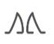
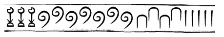
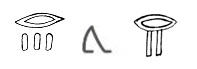
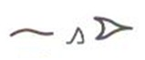

EXPERIMATES
Activitats sobre l'orígen de les fraccions
ACTIVITATS SOBRE L'ORÍGEN DE LES FRACCIONS
- Representa en notació jeroglífica els nombres:
a)
2530
b)
1/1300
c)
1325230
d)
1/20
- Escriu en notació actual els següents jeroglífics.
El símbols signifiquen resta i suma,
respectivament.
a)

b)

c)

d)

- Contesta les següents preguntes:
a)
Què és un papir? Per a
què l’utilitzaven els egipcis?
b)
Què conté el Papir
Rhind?
c)
Investiga com va perdre
el seu ull el deu Horus